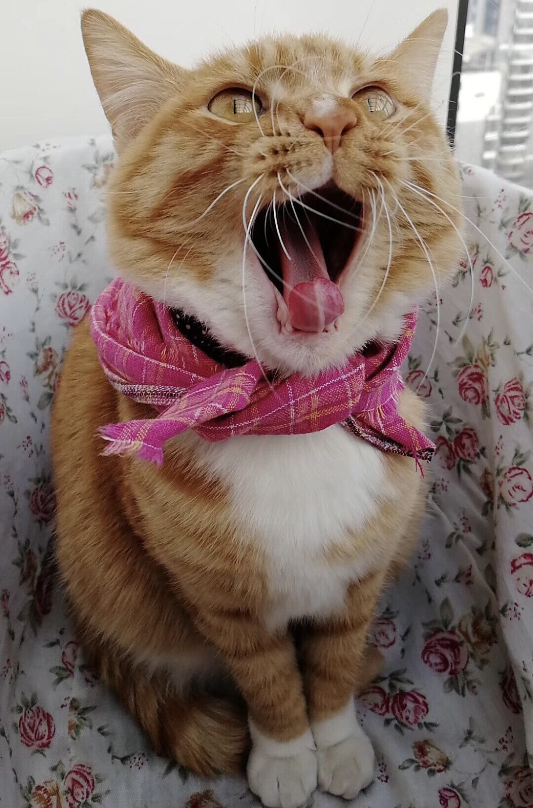
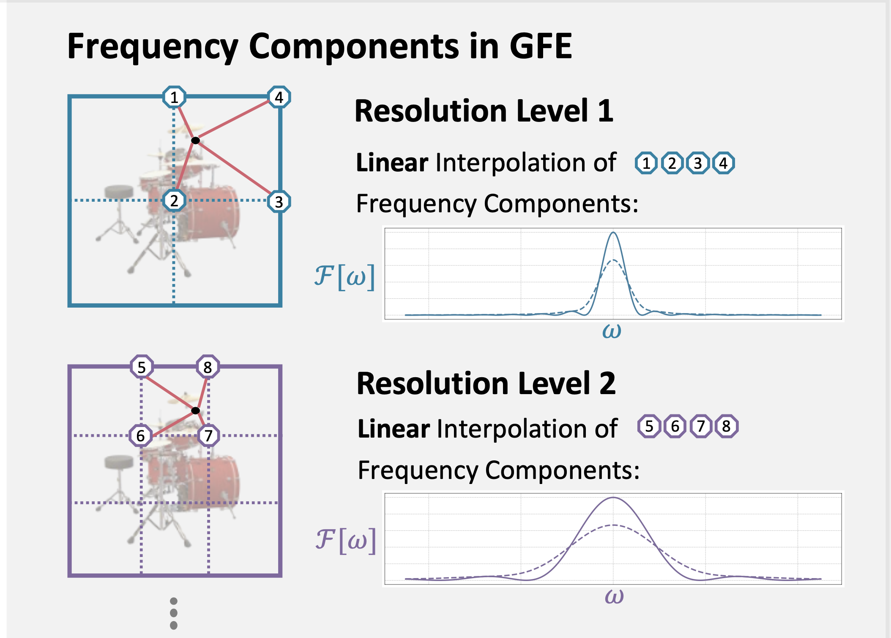
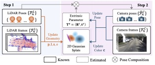
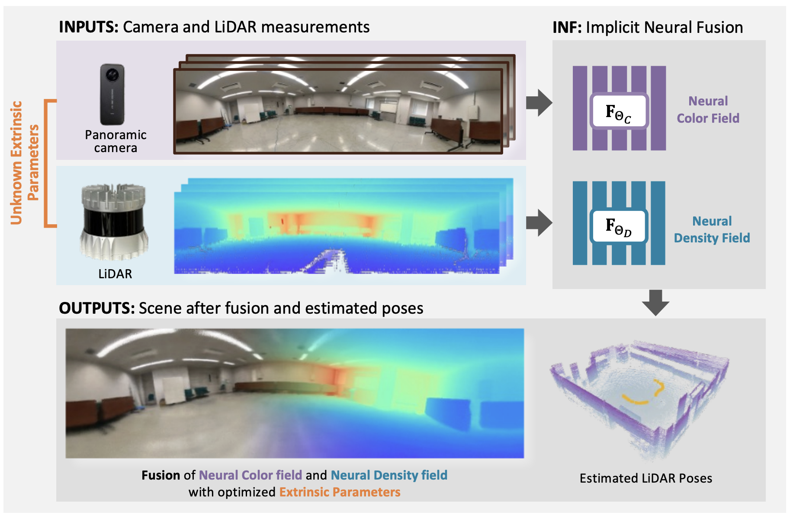
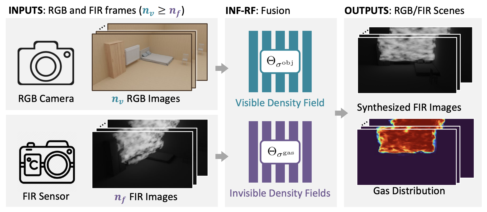
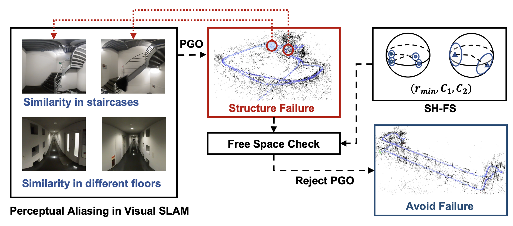

|
Shuxiang XIE 谢舒翔 謝舒翔 PhD Candidate • The University of Tokyo • Open for Job Opportunities I am a PhD candidate at The University of Tokyo, working under the supervision of Prof. Takeshi Oishi. My research focuses on 3D reconstruction, emphasizing the theoretical foundations of emerging 3D neural modeling techniques and optimization methods. I received my Master's degree from The University of Tokyo in 2022 and my Bachelor of Science degree (Electrical and Computer Engineering) from Shanghai Jiao Tong University (UM-SJTU Joint Institute) in 2020. My work connects classical robotics topics such as SLAM and sensor fusion with newer approaches like implicit neural representations and flow matching, aiming for efficient, compact, and theoretically well-founded 3D reconstruction. Languages: Chinese (Native), Japanese, English |

My Cat |
▼ Publications |
|

|
G2fR: Frequency Regularization in Grid-based Feature Encoding Neural Radiance Fields
Shuxiang Xie, Shuyi Zhou, Ken Sakurada, Ryoichi Ishikawa, Masaki Onishi, and Takeshi Oishi European Conference on Computer Vision (ECCV), 2024 [paper] [code] Generalized frequency regularization method for grid-based implicit representations (e.g., Instant-NGP), analyzing their mathematical principles and frequency behavior. |

|
PGTI: Pose Graph Topological Integrity for Map Quality Assessment in SLAM
Shuxiang Xie, Ken Sakurada, Ryoichi Ishikawa, Masaki Onishi, and Takeshi Oishi [code] Theoretical analysis of error propagation in pose graph optimization via heat diffusion / relative consensus; introduces the PGTI metric to measure inconsistency between pose graphs and explored space. |
|

|
Robust LiDAR-Camera Calibration with 2D Gaussian Splatting
Shuyi Zhou, Shuxiang Xie, Ryoichi Ishikawa, Takeshi Oishi IEEE Robotics and Automation Letters (RA-L) [paper] [code] Theoretical study of LiDAR-camera calibration challenges under 2D Gaussian Splatting and proposal of new calibration methods. |
|

|
INF: Implicit Neural Fusion for LiDAR and Camera
Shuyi Zhou, Shuxiang Xie, Ryoichi Ishikawa, Ken Sakurada, Masaki Onishi, and Takeshi Oishi IEEE/RSJ International Conference on Intelligent Robots and Systems (IROS), 2023 [paper] [project] Implicit Neural Fusion of multi-sensor inputs (RGB and LiDAR) through extensions of the volume rendering equation for robust sensor fusion and 3D reconstruction. |
|

|
Implicit Neural Fusion of RGB and Far-Infrared 3D Imagery for Invisible Scenes
Xiangjie Li, Shuxiang Xie, Ken Sakurada, Ryusuke Sagawa, and Takeshi Oishi IEEE/RSJ International Conference on Intelligent Robots and Systems (IROS), 2024 [paper] Extension of INF to Far-Infrared (FIR) thermal imaging for modeling invisible phenomena such as gas and heat distribution through implicit neural representations. |
|

|
Fast Structural Representation and Structural-aware Loop Closing for Visual SLAM
Shuxiang Xie, Ryoichi Ishikawa, Ken Sakurada, Masaki Onishi, and Takeshi Oishi IEEE/RSJ International Conference on Intelligent Robots and Systems (IROS), 2022 [paper] [code] Structural representation (SH-FS) to monitor structural integrity and enable structural-aware loop closing to mitigate perceptual aliasing. |
▶ Experience & Awards |
|
Last updated: December 2025 |